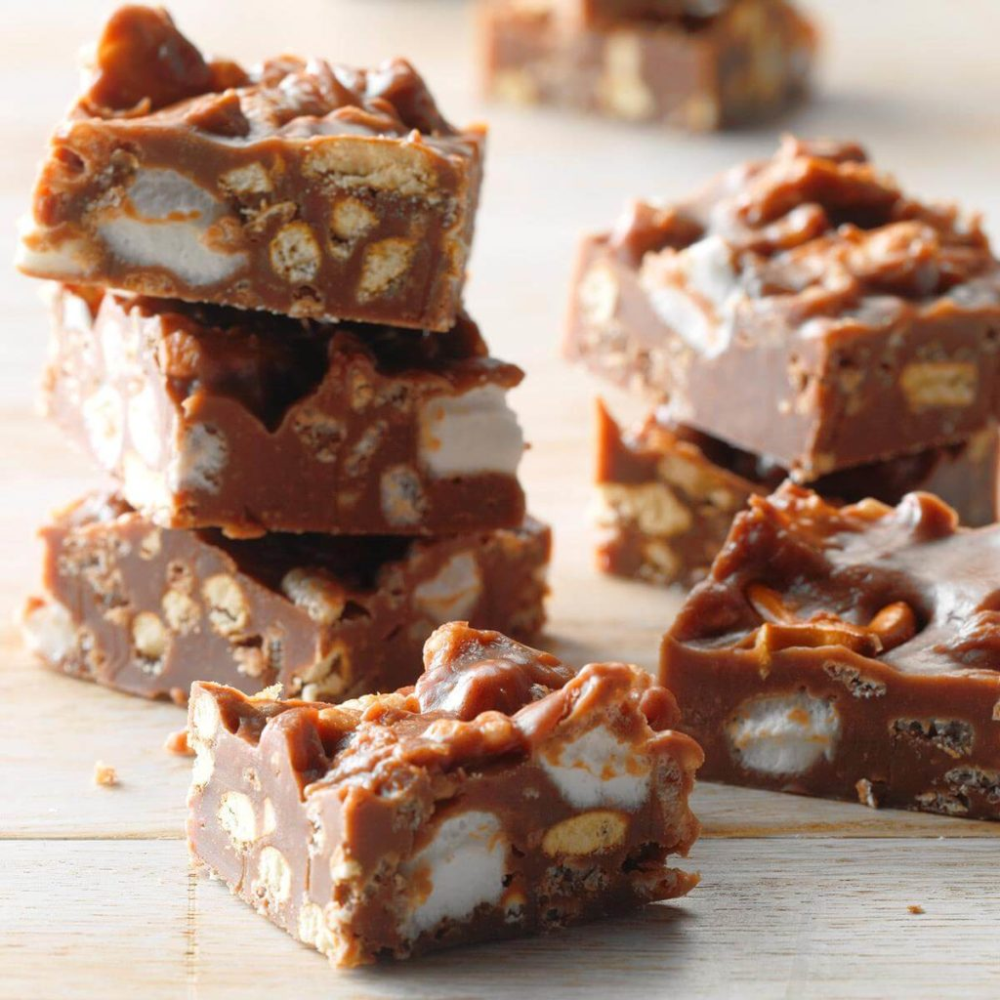

Chocolate Marshmallow Peanut Butter Squares
Ingredients
1 can (14 ounces) sweetened condensed milk
1 package (11 ounces) peanut butter and milk chocolate chips
1/2 cup milk chocolate chips
1/2 cup creamy peanut butter
1 teaspoon vanilla extract
1-1/2 cups miniature marshmallows
1 cup broken miniature pretzels
1 cup Rice Krispies
Directions
- Preheat oven to 400°. Melt butter in a 10-in. cast-iron or other ovenproof skillet over medium-high heat. Add onion; cook and stir until tender, 2-3 minutes.
- Refrigerate, covered, until firm, about 4 hours. Cut into squares. Store in an airtight container in the refrigerator.
Nutrition Facts
1 square: 85 calories, 4g fat (2g saturated fat), 3mg cholesterol, 50mg sodium, 12g carbohydrate (8g sugars, 0 fiber), 1g protein.